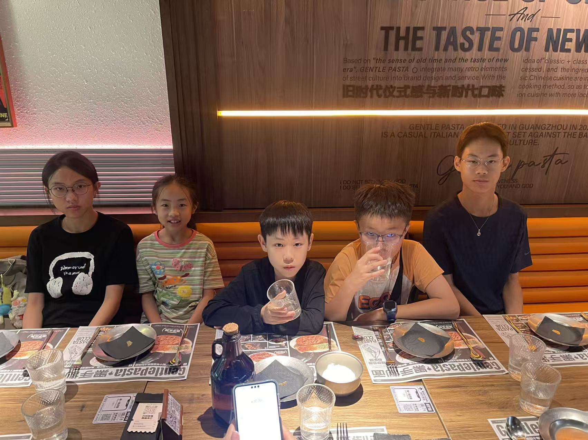
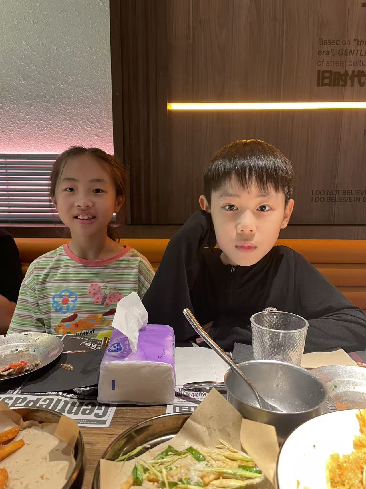
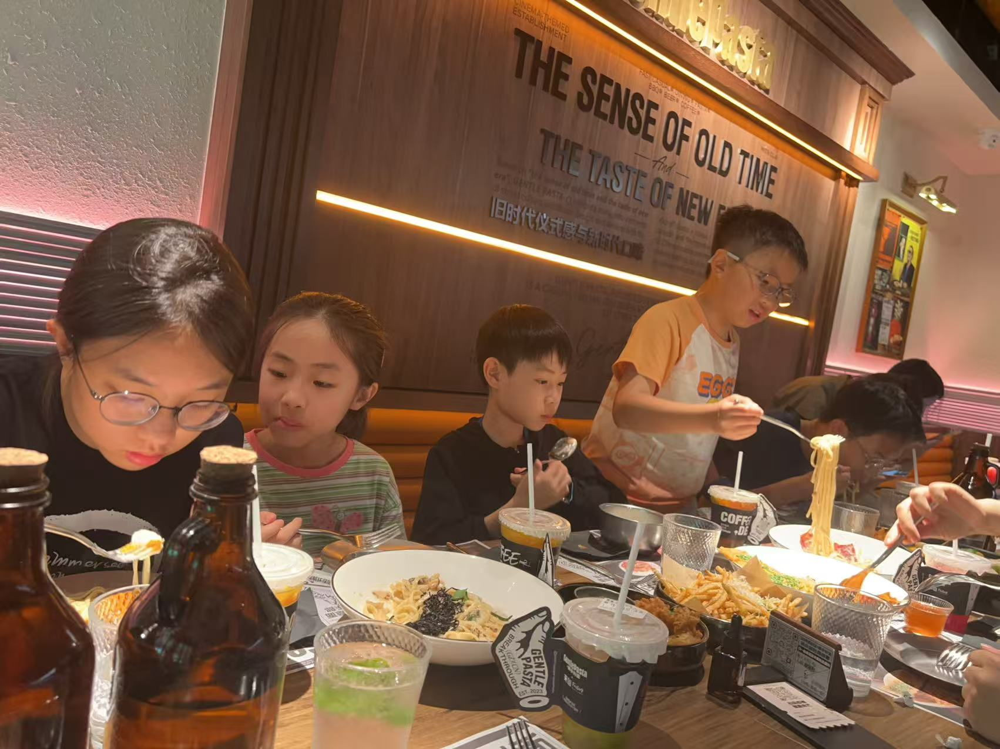

周五晚带孩子们到商场里的意面餐厅聚餐。 五个小朋友排排坐，菜单上写着“Gentle Pasta”，旧时代仪式感与新时代口味并列在墙上。 点了一桌意面、小食和饮料，孩子们边吃边聊，有人认真卷面，有人举杯喝水。 回家后还录了一段“回味”，疑似在展示什么礼物或新收获。
周五晚带孩子们到商场里的意面餐厅聚餐。 五个小朋友排排坐，菜单上写着“Gentle Pasta”，旧时代仪式感与新时代口味并列在墙上。 点了一桌意面、小食和饮料，孩子们边吃边聊，有人认真卷面，有人举杯喝水。 回家后还录了一段“回味”，疑似在展示什么礼物或新收获。
老表们带孩子们聚餐，记录一次平常的家族小聚与回家后的回味。
夏末晴热；聚餐在室内，纯记录，非出行前预警。
这一天拍下的照片与视频；点缩略图或左右滑动可切换主图。


